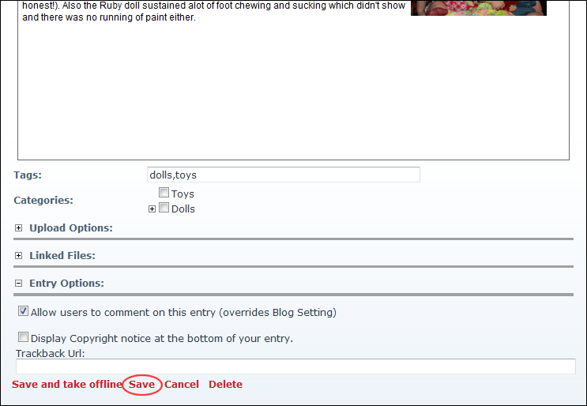

Editing a Blog Entry
How to edit a blog entry. This task can be performed by bloggers on their own blogs and by Administrators on all blogs.
- Locate the required blog entry. See "Viewing Blog Entries for a Month", See "Viewing Blog Entries for a Single Date", or See "Viewing Recent Entries for a Single Blog".
- Click the
 Edit Entry link.
Edit Entry link.

- Edit one or more fields as required. See "Adding a Basic Blog Entry"
- Click the Save link.

Saving an Edited Blog Entry